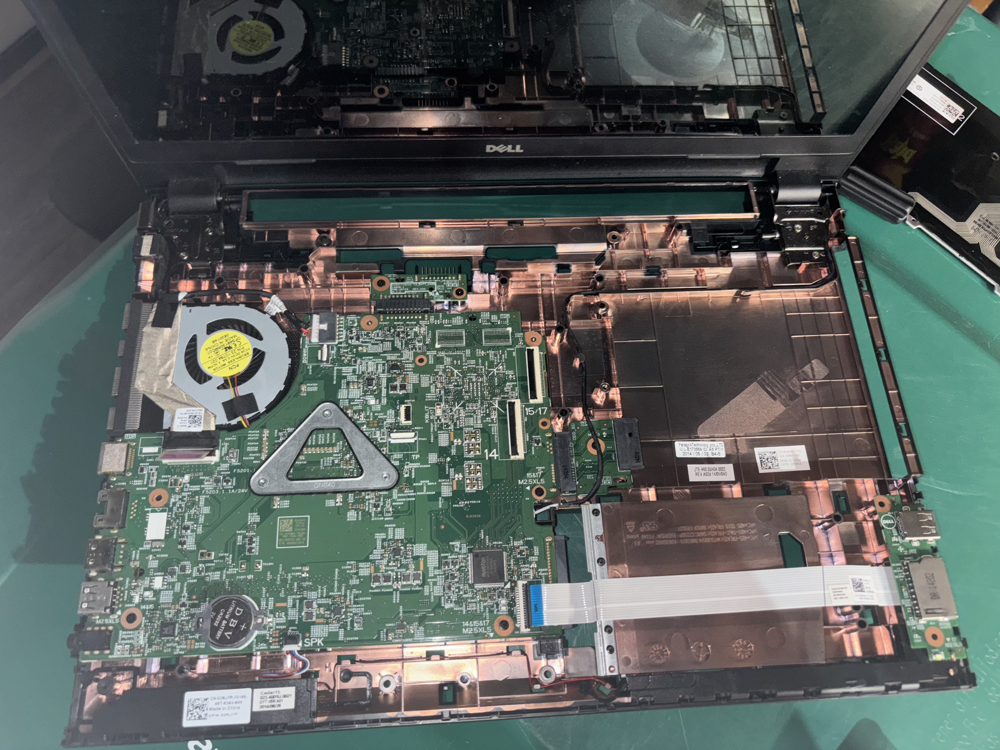
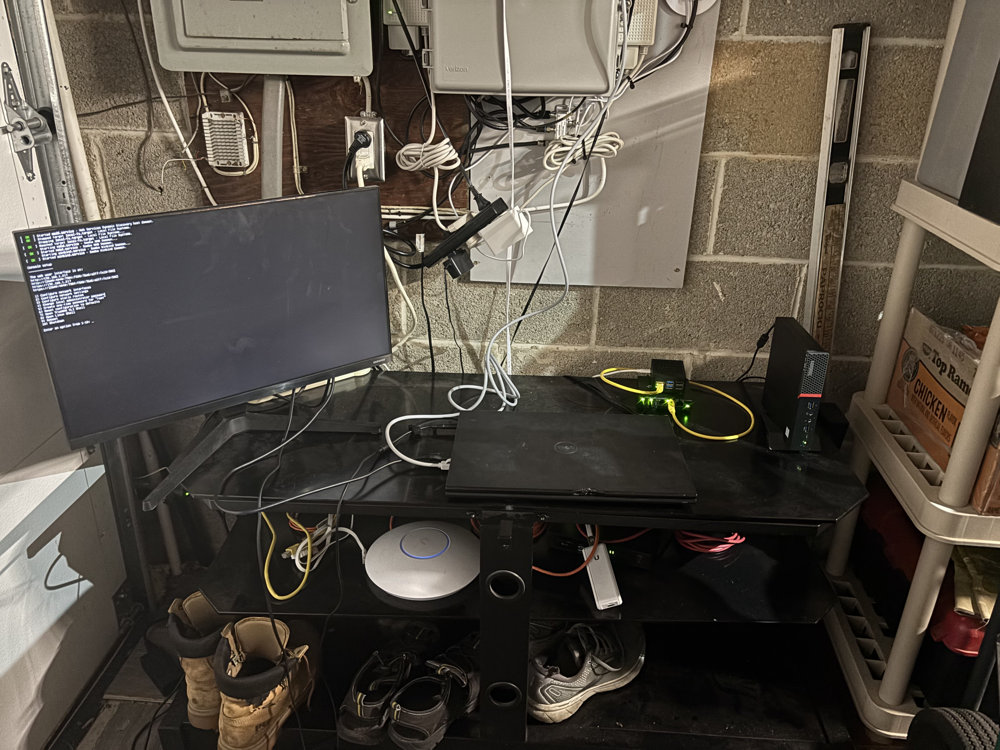
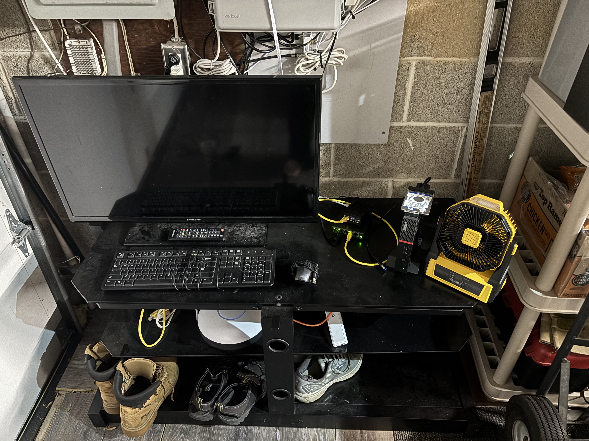

1.7.26

Revised my homelab through the winter break to use Proxmox VE hypervisor and TrueNAS Scale. Along with that, a full-blown self-hosted environment for streaming owned shows.
1.7.26
Revised my homelab through the winter break to use Proxmox VE hypervisor and TrueNAS Scale. Along with that, a full-blown self-hosted environment for streaming owned shows.
8.16.25

Updated my homelab throughout the week. Now running a Minecraft server and a Ubuntu server with a couple Docker containers.
8.7.25

Tinkering with computer hardware and learning about different components and how they work together.

Popping open the hood and learning about the different components. Unhooking the connection to the built-in screen to conserve battery.

This allowed the computer to stay on while the screen was turned off, saving energy consumption.
8.6.25

The start of my homelab journey.
I decided to start a homelab after I was gifted a Lenovo mini PC. At first, I just wanted to run a Minecraft server for my college friends, but this quickly introduced me to the world of self-hosting.
In the image: a wired keyboard and mouse, the Lenovo mini PC, a small layer 2 network switch, a Raspberry Pi 5, and a 500GB hard drive salvaged from another laptop. I taught myself how to upgrade the Lenovo from Windows 10 to Windows 11, bypassing the CPU requirements via command prompt. I also set up the hard drive as a shared network drive using SMB and got Raspberry Pi OS running on the Pi.
I quickly got hooked on self-hosting and started exploring different services and hardware options at various price points.
Hardware
Services & Applications
I also run a Minecraft server for friends and a Jellyfin server for my owned media.